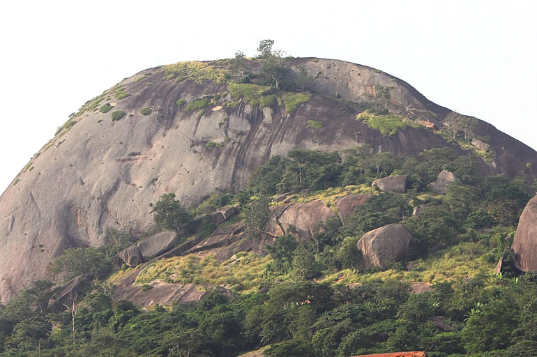
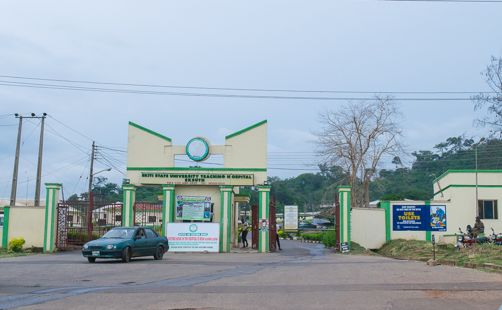

Visit Ikere
Ikere-Ekiti, also known as Ikere or Ikerre, is a city in Ekiti State of Nigeria. It is an agricultural and mine centre.
Top three important places in Ikere
The Ogoga Palace
This is the traditional and administrative center for the town's monarch, the Ogoga of Ikere, and represents the historical and cultural leadership of the community.

Olosunta and Orole Hills
These hills are significant for both their geological formation and their deep cultural and religious importance, with deities believed to reside in them and protect the town.

State Specialist Hospital Ikere
As a key healthcare institution, this hospital serves the medical needs of the residents and surrounding areas, making it a vital part of the community's infrastructure